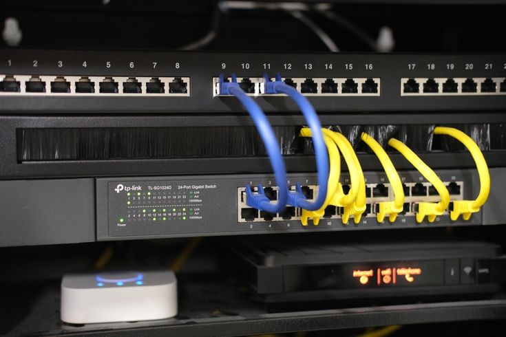

Analyse du parc
- Atelier général: 10 postes informatiques et 7 machines.
- TTH: 1 poste informatique et 1 machine.
- Rotors: 4 postes informatiques et 8 machines.
- Magasin central: 1 poste informatique.
- Expédition: 2 postes informatiques.
Pour mon stage de première année, j'ai travaillé sur l'analyse et la représentation d'une infrastructure réseau d'atelier. L'objectif était de comprendre l'existant, d'identifier les équipements, de créer des schémas clairs et de proposer des améliorations.


Le document présente aussi PuTTY, un outil permettant d'établir une connexion distante en ligne de commande vers des équipements ou serveurs. Il est utile pour administrer, vérifier ou diagnostiquer des éléments réseau.
Le travail consistait à comprendre comment les baies alimentent les différentes zones.
Le projet demandait de passer de l'observation terrain à une représentation compréhensible.
Ce stage m'a permis de relier le câblage réel, les baies, les VLANs et la sécurité réseau.